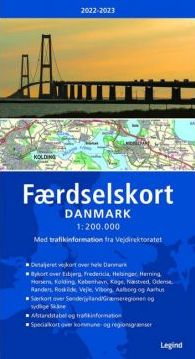

Vorneweg - ich habe alle Informationen, Anschriften und GPS-Daten zigmal geprüft,
aber ich übernehme keine Verantwortung, falls mir doch einmal ein Fehler unterlaufen sein sollte!
! Herzlichen Dank für Ihr Verständnis !
|
R e i s e r o u t e |
|||||
| Nr. | Ort | Objekt | km | GPS-Daten - NO | Anschrift |
|---|---|---|---|---|---|
|
S c h l e s w i g - H o l s t e i n |
|||||
| 1 | Haithabu | Handelsplatz am Haddebyer Noor mit Halbkreiswall | 0 | 54.49129 9.56704 | Zum Nordtor 1, 24866 Busdorf |
| A | Haithabu | Wikinger-Museum | 0 | 54.49719 9.56931 | Am Haddebyer Noor 5, 24866 Busdorf |
| 2 | Danewerk | Wallanlage - insgesamt über 30 km Länge | 7 | 54.47199 9.47685 | z.B. bei Kurburg |
| B | Dannewerk | Danevirkgården | 3 | 54.48328 9.49848 | Ochsenweg 5, 24867 Dannewerk |
|
J ü t l a n d |
|||||
| 3 | Brovold | Wallanlage/Siedlung | 88 | 54.94831 9.89374 | Gammel Brovej 5a, 6440 Augustenborg |
| 4 | Stolbro Næs | Schiffssetzung(en) im freien Feld | 11 | 54.98348 9.78393 | Spanbro 11, 6430 Nordborg |
| 5 | Dyndved | Schiffssetzung(en) im freien Feld | 7 | 54.97446 9.83518 | Katholmvej 2, 6430 Nordborg |
| 6 | Hovslund | Runenstein im freien Gelände | 62 | 55.14011 9.34497 | Oksevejen, 6230 Rødekro |
| 7 | Starup | Runenstein im Kirchhof | 24 | 55.24815 9.53209 | Starup Kirkevej 30, 6100 Haderslev |
| C | Ribe | Ribe Vikingecenter | 55 | 55.30992 8.76593 | Lustrupvej 1, 6760 Ribe |
| D | Ribe | Ribes Vikinger | 3 | 55.32804 8.76891 | Odins Plads 1, 6760 Ribe |
| 8 | Malt | Runenstein im Schloss Sønderskov in Brørup | 24 | 55.45213 9.03777 | Sønderskovgårdvej 2, 6650 Brørup |
| 9 | Læborg | Runenstein im Kirchhof | 17 | 55.52309 9.11459 | Læborg Kirkevej 5, 6600 Vejen |
| 10 | Bække | Runenstein bei der Kirche | 6 | 55.56910 9.13700 | Søndergade 11-13, 6622 Bække |
| 11 | Klebæk Høje | Schiffssetzung / Runenstein als Stevenstein | 1 | 55.58189 9.14471 | Klebaekvej 9, 6622 Bække |
| 12 | Horne | Runenstein im Kirchhof | 50 | 55.72483 8.53063 | Hornelund 2, 6800 Varde |
| 13 | Bork Vikingehavn | Museum / Rekonstruktion von Gebäuden u.a. | 23 | 55.83662 8.26616 | Vikingevej 5, 6893 Hemmet |
| 14 | Ådum | Runenstein im Kirchhof | 25 | 55.87476 8.59523 | Bindesbølvej 8A, 6880 Tarm |
| 15 | Hanning | Runenstein eingemauert - Südwand des Kirchenchores | 23 | 56.01914 8.51179 | Kirkebakken 12, 6900 Skjern |
| 16 | Rammedige | Wallanlage / Grabhügel | 85 | 56.49590 8.17777 | Bøvlingvej 93, 7620 Lemvig |
| 17 | Ydby / Flarup | Runenstein (2016 wiedergefundener Runenstein / Replik) | 57 | 56.71218 8.39784 | Ydbyvej 170B, 7760 Hurup Thy |
| 18 | Hurup | Runenstein im Kirchhof | 5 | 56.75397 8.42559 | Kirkevej 42C, 7760 Hurup Thy |
| 19 | Hørdum | Bildstein im Waffenhaus der Kirche | 13 | 56.84422 8.51291 | Thorsvej 25a, 7752 Snedsted |
| 20 | Sjørring | Mittelalterliche Burg / Brücke | 17 | 56.95040 8.58564 | Vorupørvej 60, 7700 Thisted |
| 21 | Vang | Runenstein im Waffenhaus der Kirche | 8 | 56.98389 8.51106 | Rodals Bakke 7, 7700 Thisted |
| 22 | Højstrup Mark | Grabplatz / Schiffssetzung / Bautasteine | 36 | 57.05381 9.00057 | Tømmerbyvej 105, 7741 Frøstrup |
| 23 | Aggersborg | Ringburg / kleines Museum vor Ort | 29 | 56.99656 9.25464 | Thorupvej 13, 9670 Løgstør |
| 24 | Jetsmark | Runenstein im Waffenhaus der Kirche | 43 | 57.21095 9.66861 | Kvorupvej 94, 9490 Pandrup |
| 25 | Hune | Runenstein in der Kirche | 6 | 57.25094 9.61798 | Kirkevej 11, 9492 Blokhus |
| 26 | Lindholm Høje | Grabplatz / Schiffssetzungen / Museum | 30 | 57.07825 9.91007 | Vendilavej 11, 9400 Nørresundby |
| 27 | Ferslev | Runenstein - eingemauert - in der Kirche | 20 | 56.95119 9.89691 | Rævedalsvej 3, 9230 Svenstrup J |
| 28 | Gunderup | 2 Runensteine im Waffenhaus der Kirche | 9 | 56.94136 10.01381 | Hadsund Landevej 527, 9260 Gistrup |
| 29 | Lyngby | Runensteinfragment im Waffenhaus der Kirche | 12 | 56.84378 10.04258 | Lyngbyvej 7, 9520 Skørping |
| 30 | Suldrup | Runenstein im Kirchhof | 25 | 56.85560 9.69093 | Dalumvej 30, 9541 Suldrup |
| 31 | Skivum | Runenstein im Waffenhaus der Kirche | 8 | 56.86569 9.58926 | Skivumvej 63, 9240 Nibe |
| 32 | Sebbersund | Handelsplatz mit Kirche | 14 | 56.96859 9.55521 | St. Ajstrupvej 12B, 9240 Nibe |
| 33 | Flejsborg | Runenstein im Waffenhaus der Kirche | 22 | 56.86595 9.34247 | Gattenvej 23, 9640 Farsø |
| 34 | Farsø | Runenstein - eingemauert - in der Kirche | 11 | 56.77418 9.33991 | Nørregade 21, 9640 Farsø |
| 35 | Års | Runenstein im Kirchhof | 12 | 56.80457 9.51445 | Kirkeplads 1, 9600 Aars |
| 36 | Giver | Runenstein im Kirchhof | 3 | 56.82914 9.58230 | Skivumvej 112, 9600 Aars |
| 37 | Ravnkilde | Runenstein auf einem Hügel bei der Kirche | 17 | 56.75455 9.75594 | Bygaden 2, 9610 Nørager |
| 38 | Kongens Tisted | Runenstein an der Pfarrgarteneinfriedung | 11 | 56.74980 9.59029 | Elbjergvej 3, 9610 Nørager |
| 39 | Durup (Nørager) | Runenstein beim Nøragergaard | 6 | 56.70342 9.63051 | Solhøjvej 9, 9610 Nørager |
| 40 | Klejtrup | Runenstein im freien Gelände | 17 | 56.60397 9.64679 | Søvej 44, 9500 Hobro |
| 41 | Fyrkat | Ringburg / Wikingerlanghaus- / Gehöftnachbau | 13 | 56.62653 9.78189 | Vikingeborgen, Fyrkatvej, 9500 Hobro |
| 42 | Hobro | Runenstein in der Stadtbibliothek | 2 | 56.63850 9.79289 | Adelgade 28, 9500 Hobro |
| E | Hobro | Sydhimmerlands Museum | 0 | 56.63669 9.79293 | Vestergade 21, 9500 Hobro |
| 43 | Glenstrup | Runenstein im Waffenhaus der Kirche | 9 | 56.58411 9.85126 | Glenstrup Søvej 34, 8990 Fårup |
| 44 | Vester Tørslev | Runenstein im Waffenhaus der Kirche | 4 | 56.60209 9.89823 | Søbjergvej 7, 9550 Mariager |
| 45 | Svenstrup | Runenstein im freien Gelände | 7 | 56.59932 9.99864 | Randersvej 30, 9550 Mariager |
| 46 | Dalbyover | Runenstein im Waffenhaus der Kirche | 16 | 56.61975 10.19516 | Tinghøjvej 8A, 8970 Havndal |
| 47 | Spentrup | Runenstein im Waffenhaus der Kirche | 16 | 56.59992 10.06321 | Hastrupvej 1, 8983 Gjerlev |
| 48 | Lem | Runenstein im Waffenhaus der Kirche | 5 | 56.50350 10.06288 | Lemvej 51, 8930 Randers |
| F | Randers | Kulturhistorisk Museum | 6 | 56.46008 10.04039 | Stemannsgade 2, 8900 Randers |
| 49 | Borup | Runenstein im Waffenhaus der Kirche | 7 | 56.50483 9.98530 | Borup Byvej 83, 8920 Randers NV |
| 50 | Øster Bjerregrav | 2 Runensteine im Kirchhof | 8 | 56.48870 9.90502 | Kirkevej 11, 8920 Randers NV |
| 51 | Grensten | Runenstein im Waffenhaus der Kirche | 15 | 56.42082 9.92417 | Byvej 2, 8870 Langå |
| 52 | Ålum | 4 Runensteine in der Kirche / im Kirchhof | 11 | 56.45246 9.83270 | Dalen 8, 9820 Randers NV |
| 53 | Skjern | 2 Runensteine im Kirchhof | 6 | 56.45515 9.75259 | Gamle Randersvej 18, 8830 Tjele |
| 54 | Asmild | Runenstein im Waffenhaus der Kirche | 23 | 56.44679 9.42487 | Vinkelvej 16, 8800 Viborg |
| 55 | Hjermind | Runenstein im Pfarrhausgarten | 22 | 56.39580 9.68135 | Tingstedvej 12, 8850 Bjerringbro |
| 56 | Bjerring | Runenstein im Waffenhaus der Kirche | 6 | 56.37900 9.62237 | Bjerring Byvej 22, 8850 Bjerringbro |
| 57 | Vejerslev | Schiffssetzung (verschwunden, vormals ca. 90 m x 14 m) | 12 | 56.30127 9.68467 | Borrevej 1, 8850 Bjerringbro |
| 58 | Sønder Vinge | Runenstein im Waffenhaus der Kirche | 14 | 56.40885 9.78671 | Kirkebakken 13, 8860 Ulstrup |
| 59 | Ulstrup | Runenstein im Park von Schloss Ulstrup | 2 | 56.39698 9.79262 | Ulstrup Skovvej 20, 8860 Ulstrup |
| 60 | Langå | Runenstein im Kirchhof | 6 | 56.39438 9.89072 | Ulstrupvej 30A, 8870 Langå |
| 61 | Laurbjerg | Runenstein im Waffenhaus der Kirche | 8 | 56.35585 9.91750 | Kirkevej 5, 8870 Langå |
| 62 | Hørning | Stabkirche / Grabhügel (nicht mehr zu sehen) | 26 | 56.41178 10.20431 | Præstedalsvej 10, 8960 Randers SØ |
| 63 | Mygind | Runenstein bei der Kirche | 4 | 56.38556 10.22065 | Smedebakken 2, 8544 Mørke |
| 64 | Sjellebro | Maskenstein im freien Gelände | 3 | 56.40382 10.24121 | Randersvej 190, 8544 Mørke |
| 65 | Virring | Runenstein im Waffenhaus der Kirche | 5 | 56.43465 10.24627 | Kirketoften 3, 8900 Randers C |
| 66 | Stenalt | Runenstein im Park des Herrenhofes Stenalt | 13 | 56.50859 10.29105 | Stenaltvej 8, 8950 Ørsted |
| 67 | Øster Alling | Runenstein im Waffenhaus der Kirche | 14 | 56.41228 10.31419 | Hovegaden 43, 8963 Auning |
| 68 | Rimsø | Runenstein auf einem Grabhügel bei der Kirche | 36 | 56.47840 10.79466 | Toresvej 4, 8500 Grenå |
| 69 | Kolind | Runenstein im Waffenhaus der Kirche | 24 | 56.36175 10.59123 | Kapelvej 1, 8560 Kolind |
| 70 | Hammel | Runenstein in der südlichen Kirchenmauer | 62 | 56.25545 9.86286 | Vestergade 9B, 8450 Hammel |
| 71 | Sporup | Runenstein im Waffenhaus der Kirche | 6 | 56.22634 9.82510 | Sporup Kirkevej 79, 8472 Sporup |
| 72 | Sjelle | Runenstein mit Maske in der Kirche | 11 | 56.18314 9.93079 | Præstegaardsvej 3A, 8464 Galten |
| G | Århus | Vikingemuseet | 19 | 56.15661 10.20925 | Sankt Clemens Torv 6, 8000 Aarhus |
| H | Moesgård | Forhistorisk Museum | 9 | 56.08871 10.22344 | Moesgård Allé 15, 8270 Højbjerg |
| 73 | Sønder Vissing | 2 Runensteine in der Kirche | 48 | 56.02322 9.64238 | GI. Ryevej 11, 8740 Brædstrup |
| 74 | Kanhavekanal | Kanal an der schmalsten Stelle Samsøs | 55 | 55.90690 10.60485 | Kanhave 2, 8305 Samsø |
| 75 | Gylling | Runenstein im Waffenhaus der Kirche | 16 | 55.89012 10.16453 | Lerdrupvej 2, 8300 Odder |
| 76 | Tamdrup Kirche | Bilddarstellung der Taufe Harald Blauzahns | 33 | 55.89164 9.73762 | Tamdrup Kirkevej 1, 8700 Horsens |
| 77 | Hjarnø | Schiffssetzungen im freien Gelände | 30 | 55.81818 10.08588 | Hovedvejen 18 (Hjarnø), 8700 Horsens |
| 78 | Jelling | 2 Runensteine / 2 Grabhügel / Schiffssetzung u.a. | 59 | 55.75643 9.41829 | Gormsgade 23, 7300 Jelling |
| 79 | Randbøl | Runenstein im freien Gelände | 23 | 55.65782 9.21618 | Bøgvadvej 83, Randbøldal |
| 80 | Ravning | Brückenrekonstruktion im freien Gelände | 13 | 55.67498 9.34732 | Ravningvej 25, 7182 Bredsten |
| 81 | Egtved | Runenstein im Waffenhaus der Kirche | 8 | 55.61992 9.30075 | Fyrre Alle 6, 6040 Egtved |
| 82 | Sønder Vilstrup | Runenstein Kinder-/Schulheimes Landerupgård | 20 | 55.56952 9.55868 | Landerupvej 8, 6000 Kolding |
|
F ü n e n |
|||||
| 83 | Ørslev | Taufbecken in der Kirche | 36 | 55.40551 9.91355 | Tellerupvej 8, 5592 Ejby |
| 84 | Nørre Nærå | Runenstein in der Kirche | 46 | 55.57323 10.28345 | Kirkegyden 9, 5450 Otterup |
| 85 | Glavendrup | Runenstein / Schiffssetzung im freien Gelände | 10 | 55.50914 10.29767 | Stenager 8, 5485 Skamby |
| 86 | Nonnebakken | Ringburg (überbaut) | 19 | 55.39194 10.38916 | Nonnebakken 6, 5000 Odense C |
| 87 | Ladby | Schiffsgrab im rekonstruierten Grabhügel | 37 | 55.44542 10.61518 | Vikingevej 123, 5300 Kerteminde |
| 88 | Bytoften | Siedlung | 18 | 55.34794 10.58225 | Røjrupvej 60, 5550 Langeskov |
| 89 | Rønninge | Runenstein in der Kirche | 3 | 55.34469 10.60441 | Kirkestræde 2, 5550 Langeskov |
| 90 | Faaborg | Runenstein (Neufund 2006) im Museum "Den gamle Gaard" | 46 | 55.09542 10.24085 | Holkegade 1, 5600 Faaborg |
| L a n g e l a n d | |||||
| 91 | Konabbe Skov | Schiffssetzung | 57 | 54.84735 11.77670 | Kågårdsvej 3, 5900 Rudkøbing |
| S e e l a n d | |||||
| 92 | Trelleborg | Ringburg / rekonstruiertes Wikingerlanghaus | 87 | 55.39461 11.27185 | Trelleborg Alle 4, 4200 Slagelse |
| 93 | Gørlev | 2 Runensteine in der Kirche | 24 | 55.53784 11.22628 | Kirkevangen 14B, 4281 Gørlev |
| 94 | Tissø | Königssitz und Kultstätte | 6 | 55.57475 11.25174 | Bakkendrupvej 28, 4480 Store Fuglede |
| 95 | Fjenneslev | Runenstein im Kirchhof | 44 | 55.43317 11.68734 | Langtoftevej 2A, 4173 Fjenneslev |
| 96 | Alsted | Runenstein im Kirchhof | 4 | 55.40444 11.66460 | Alstedvej 30, 4173 Fjenneslev |
| 97 | Sandby | Runenstein im Kirchhof | 12 | 55.37895 11.73898 | Kirkevej 13, 4171 Glumsø |
| 98 | Lejre | Schiffssetzungen / Großgehöft im freien Gelände | 35 | 55.61543 11.96911 | Orehøjvej 4, 4320 Lejre |
| 99 | Ferslev | Schiffssetzung im freien Gelände | 20 | 55.769140 11.91753 | Egebjergvej 1, 4050 Skibby |
| 100 | Jægerspris | 3 Runensteine im Schlossgarten | 15 | 55.85543 11.97426 | Slotsgården 20, 3630 Jægerspris |
| 101 | Frederikssund | Rekonstruktion von Langhaus und Grubenhäuser | 8 | 55.82886 12.05776 | Kalvøvej 28, 3600 Frederikssund |
| I | Roskilde | Vikingeskibshallen | 27 | 55.64965 12.07798 | Vindeboder 12, 4000 Roskilde |
| 102 | Hedehusene | Runenstein im Kirchhof | 9 | 55.64995 12.20771 | Hovedgaden 369, 2640 Hedehusene |
| J | Kopenhagen | Nationalmuseet | 24 | 55.67450 12.57464 | Ny Vestergade 10, 1471 København |
| 103 | Vallo Borgring | Ringburg - Neufund 2014 - Ausgrabungen bis 2018 | 48 | 55.46975 12.12190 | Ringstedvej, 4600 Køge |
| 104 | Risby | Wegstück aus Steinen im freien Gelände | 43 | 55.13318 11.92795 | Risbyvej 2A, 4750 Lundby |
| L o l l a n d | |||||
| K | Maribo | Lolland-Falster Stiftsmuseum | 64 | 54.77621 11.50189 | Banegårdpladsen 11, 4930 Maribo |
| 105 | Tågerup | Runenstein an der Kirchenmauer | 15 | 54.67915 11.45173 | Tågerupvej 2A, 4970 Rødby |
| 106 | Tillitse | Runenstein im Kirchhof | 27 | 54.76617, 11.15699 | Tillitse Kirkevej 1, 4983 Dannemare |
|
insgesamt: |
2484 |
km |
|||
Die Nummerierung habe ich gegenüber den Landkarten und den einzelnen Regionen abgeändert/aktualisiert und werde dies zeitnah auch dort so übertragen. Die GPS-Daten führen per Eingabe im Auto-Navi oder auch in der Google-Maps Suche direkt zu der betreffenden Örtlichkeit - die ewige Sucherei hat endlich ein Ende!
Als Kartenmaterial kann ich trotz Navigation, Smartphone usw. immer noch die sehr handliche Straßenkarte "Færdselskort - Danmark 1:200 000" empfehlen. Es handelt sich um eine Kartensammlung im Format 27,5 x 31 cm, mittig gefaltet - als Spiralblock ausgelegt, in einem Plastikschuber. Dänemark ist hier in 18 Bereiche eingeteilt (incl. Bornholm). Zusätzlich ist eine einseitige DK-Karte mit den Hauptverkehrsadern, eine Karte für das südliche Schonen/Schweden in 1:375.000 sowie eine Karte der Grenzregion DK-D bis in Höhe Schleswig in 1:250.000 angeschlossen. Sie verfügt weiterhin über eine dreisprachige Legende (Dänisch, Englich und Deutsch), eine Entfernungstabelle, ein Ortsregister und Stadtpläne von Esbjerg, Fredericia, Helsingør, Herning, Horsens, Kolding, Kopenhagen, Køge, Næstved, Odense, Randers, Roskilde, Vejle, Viborg, Aalborg und Aarhus - jeweils mit Straßenverzeichnis.
Die Karte ist in Dänemark in Buchhandlungen usw. für ca. 169 DKK (ca. 23 EUR) erhältlich. Sie kann auch über das Internet bestellt werden.

Ansicht der Ausgabe 2022-2023
So war das in der guten alten Zeit - noch weitestgehend ohne Internet und Smartphones - heute ersetzt Google-Maps oder andere Programme diese Art der Erfassung:
Zur Erinnerung: Erst am 15.01.2001 wurde z.B. Wikipedia gegründet, aber in 1999 hatte es schon die einmillionste de. Domain gegeben.
Wenn sich jemand wirklich intensiv mit Dänemark beschäftigt und auch seinen Urlaub regelmäßig dort verbringt, ist die CD-ROM "Det levende Danmarkskort 2002" besonders zu empfehlen. Wenn man sich einigermaßen mit Computern auskennt und ein bisschen die dänische Sprache beherrscht wird man damit bestimmt keine Schwierigkeiten haben (zumal Lesen viel leichter verständlich ist wie Zuhören).
Die Ausgabe für das Jahr 2002 beinhaltet u.a. komplette Karten von Dänemark im Maßstab von 1:50 000, 1:100 000, 1:850 000, 1:3.200 000 sowie eine Satellitenkarte. Über Internet-Anbindung kann für die jeweils benötigte Örtlichkeit zusätzlich auf Kartenmaterial im Maßstab von 1:25 000 zugegriffen werden. Diese Karten können abgespeichert und/oder ausgedruckt werden.
Die CD-ROM beinhaltet darüber hinaus Kartenmaterial zu Grönland, die Färöer, die ehemals dänische Region Schonen im heutigen Schweden, die Region "Großer Belt" u.a. Auf den Karten sind mit Hilfe von roten Stecknadeln Flächen- und Entfernungsmessungen möglich (auch mit mehreren Zwischenstationen).
Das Programm arbeitet mit verschiedenen Fenstern, die den persönlichen Bedürfnissen angepasst bzw. ausgeblendet werden können. Standard sind drei Fenster, zwei in der oberen Hälfte und eines in der unteren Hälfte. In den beiden oberen Fenstern wird die Satellitenkarte und eine Karte in einem größeren Maßstab angezeigt, während im unteren Fenster die verschiedenen Informations-Rubriken ausgesucht, angewählt und angezeigt werden können.
Es gibt mehrere Rubriken mit denen sich nahezu alles Wissenswerte über Dänemark in Wort und Bild erfahren lässt. In der Rubrik dänische Vorzeitdenkmäler sind die dort aufgelisteten Denkmäler u.a. alphabetisch, nach Fundtypen und nach der Fundperiode erfasst. In der Rubrik Vergnügen und Unterhaltung sind Freizeit- und Vergnügungsparks, Schwimmbäder, Kanuverleiher, Go-Kartbahnen, Golfplätze, Bowlingbahnen, Surfschulen, historische Eisenbahnstrecken usw. aufgeführt. In der Rubrik Übernachtung sind Campingplätze, Jugendherbergen, Hotels und Wirtshäuser (Kro) zu finden. In der Rubrik Put and Take Seen finden sich die Angelteiche mit einigen Tipps aufgelistet. In der Rubrik Sehenswürdigkeiten finden sich die Kirchen, Gärten und Parks, Museen, Schlösser und Herrenhöfe, Tierparks und Aquarien. In der Rubrik Reisen finden sich die Lufthäfen, Bahnhöfe und Fährhäfen. Die Rubrik Wald und Natur widmet sich den Übernachtungsplätzen in der freien Natur, den Aussichtspunkten, den Findlingen und verschiedenen Wandertouren. Die Rubrik Schonen bringt alles zu dem ehemals zu Dänemark gehörenden schwedischen Landesteil näher. In der Rubrik Touristbüros finden sich die selbigen aufgelistet. Die Rubrik Gemeinden in Zahlen ermöglich eine Einsicht in Steuersätze, Brutto-Einkommen, Altersaufbau und Ausbildungsstand der Bevölkerung, Immobilienpreise, Kindertagesstätten in den Landkreisen und den Städten/Gemeinden.
In den jeweiligen Rubriken werden die Örtlichkeiten mit Anschrift und Telefonnummer aufgeführt. Meist sind entsprechende Fotografien eingefügt. Die genaue Lage wird direkt in der Karte angezeigt. Die Örtlichkeit kann auch über die Karte ausgewählt werden. Zu fast jedem Eintrag gibt es einen oder mehrere Links, um über das Internet noch weitere Informationen einzuholen.
Außerdem kann man auch eine eigene - auch mehrere - Rubriken einfügen, mit der man dann z.B. seine jährliche Urlaubsreise in Wort und Bild festhalten kann. Mit Hilfe von grünen Stecknadeln lassen sich die betreffenden Örtlichkeiten in der Karte markieren und dann mit einem Icon für das gewünschte Thema versehen (z.B. Haus, Kanutour, Museum, Strandtour, Aussichtspunkt usw. - man kann auch eigene Icons einbinden). Dann vergibt man einen Namen für die Örtlichkeit, dazu kann man schriftliche Aufzeichnungen einfügen und ein Bild einbinden. Wenn hernach die eigene Rubrik angewählt wird, wurde eine alphabetische Übersicht der eingebundenen Örtlichkeiten angelegt und mit der Karte und den Eintragungen verlinkt. Ein Klick auf den ausgewählten Ort führt sofort zu der entsprechenden Eintragung und zeigt das dazugehörige Bild an. Dazu wird in der Karte das gewählte Icon an dem jeweiligen Ort angezeigt.
Die CD-ROM kann in verschiedenen Geschäften (Buchhandel), Postämtern usw. in Dänemark gekauft oder auch über das Internet unter www.kms.dk bestellt werden. Der Preis für die (noch aktuelle) Ausgabe 2002 liegt bei KMS derzeit bei DKK 445,- ( ca. 60 EUR). Meines Erachtens eine Anschaffung die sich wirklich lohnt! Die CD-ROM in dieser Ausgabe gab es im Oktober 2003 als günstigstes Angebot (meines Wissens) für ca. 300 DKK (ca. 40 EUR) in Buchhandlungen.
Über Neuerungen kann man auf Wunsch per eMail unterrichtet werden. Außerdem kann man via Internet verschiedene Updates zu Veränderungen kostenlos herunterladen.

Ansicht des Programms "Det levende Danmarkskort 2000" mit der selbsteingerichteten Rubrik "Auf den Spuren der Wikinger" - Die Karte oben rechts im Maßstab von 1:850 000 ist mit meinen entsprechenden Eintragungen versehen. Über die gelben Icons wird sofort im unteren Feld der eingetragene Text und das dazugehörige Bild eingeblendet.

Ansicht der (letzten) Ausgabe 2002